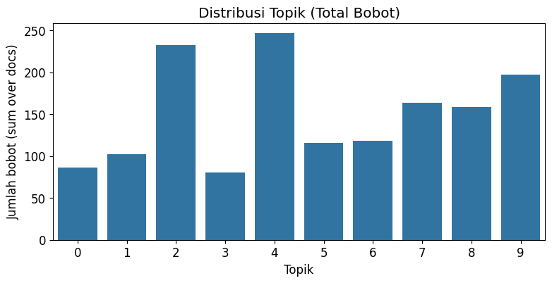
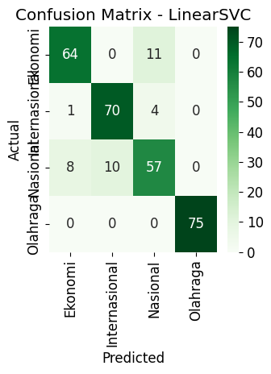
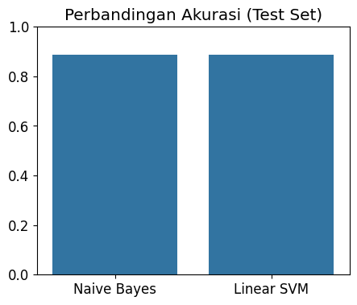

!pip install Sastrawi stopwordsiso
Collecting Sastrawi
Downloading Sastrawi-1.0.1-py2.py3-none-any.whl.metadata (909 bytes)
Collecting stopwordsiso
Downloading stopwordsiso-0.6.1-py3-none-any.whl.metadata (2.5 kB)
Downloading Sastrawi-1.0.1-py2.py3-none-any.whl (209 kB)
?25l ━━━━━━━━━━━━━━━━━━━━━━━━━━━━━━━━━━━━━━━━ 0.0/209.7 kB ? eta -:--:--
━━━━━━━━━━━━━━━━━━━━━━━━━━━━━━━━━━━━━━━━ 209.7/209.7 kB 15.9 MB/s eta 0:00:00
?25hDownloading stopwordsiso-0.6.1-py3-none-any.whl (73 kB)
?25l ━━━━━━━━━━━━━━━━━━━━━━━━━━━━━━━━━━━━━━━━ 0.0/73.5 kB ? eta -:--:--
━━━━━━━━━━━━━━━━━━━━━━━━━━━━━━━━━━━━━━━━ 73.5/73.5 kB 7.0 MB/s eta 0:00:00
?25hInstalling collected packages: stopwordsiso, Sastrawi
Successfully installed Sastrawi-1.0.1 stopwordsiso-0.6.1
# ----- 1) Import library -----
import os
import re
import pandas as pd
import numpy as np
import matplotlib.pyplot as plt
import seaborn as sns
from sklearn.model_selection import train_test_split, GridSearchCV
from sklearn.feature_extraction.text import CountVectorizer, TfidfVectorizer
from sklearn.decomposition import LatentDirichletAllocation
from sklearn.naive_bayes import MultinomialNB
from sklearn.svm import LinearSVC
from sklearn.preprocessing import LabelEncoder
from sklearn.metrics import classification_report, confusion_matrix, accuracy_score
from sklearn.pipeline import Pipeline
# For Indonesian stemming & stopwords
try:
from Sastrawi.Stemmer.StemmerFactory import StemmerFactory
import stopwordsiso as stopwordsiso
except Exception as e:
print("Peringatan: modul Sastrawi/stopwordsiso belum tersedia. Jika di Colab jalankan: !pip install Sastrawi stopwordsiso")
# fallback: minimal stopwords (ENG) - hasil kurang optimal untuk Bahasa Indonesia
from sklearn.feature_extraction.text import ENGLISH_STOP_WORDS as fallback_stopwords
stopwordsiso = None
# ----- 2) Konfigurasi awal & helper -----
RANDOM_STATE = 42
TEXT_COL = None # biarkan None agar terdeteksi otomatis; bisa diisi "berita" mis. jika ingin paksa
LABEL_COL = None # biarkan None agar terdeteksi otomatis; bisa diisi "kategori"
# Preprocessing: clean, remove urls, non-alpha, optional stemming
def clean_text(text):
if pd.isna(text):
return ""
s = str(text)
s = s.lower()
s = re.sub(r"http\S+|www\.\S+", " ", s) # remove urls
s = re.sub(r"\S+@\S+", " ", s) # remove emails
s = re.sub(r"[^a-z0-9\s]", " ", s) # keep alphanum and spaces (Bahasa ID includes a-z & digits)
s = re.sub(r"\s+", " ", s).strip()
return s
# Load Indonesian stopwords via stopwordsiso if tersedia, else simple fallback list
def get_indonesian_stopwords():
if stopwordsiso is not None:
try:
sw = stopwordsiso.stopwords("id")
return set(sw)
except Exception:
pass
# fallback small set
fallback = {
"yang","dan","di","ke","dari","ini","itu","pada","untuk","dengan",
"adalah","atau","bahwa","juga","oleh","sebagai","karena","tanpa"
}
return fallback
INDO_STOPWORDS = get_indonesian_stopwords()
# Stemmer (Sastrawi) if available
stemmer = None
try:
factory = StemmerFactory()
stemmer = factory.create_stemmer()
except Exception:
stemmer = None
def tokenize_and_stem(text, do_stem=True, remove_stopwords=True):
text = clean_text(text)
tokens = text.split()
if remove_stopwords:
tokens = [t for t in tokens if t not in INDO_STOPWORDS and len(t) > 1]
if do_stem and (stemmer is not None):
tokens = [stemmer.stem(t) for t in tokens]
return " ".join(tokens)
# ----- 3) Load dataset -----
# Ubah path jika perlu
DATA_PATH = "Berita.csv"
if not os.path.exists(DATA_PATH):
raise FileNotFoundError(f"File '{DATA_PATH}' tidak ditemukan. Upload Berita.csv ke direktori kerja.")
df = pd.read_csv(DATA_PATH)
print("Dataset shape:", df.shape)
print("Kolom:", df.columns.tolist())
# Auto-detect kolom teks dan label bila belum ditentukan
if TEXT_COL is None:
text_candidates = ["text","teks","isi","isi_berita","berita","content","artikel"]
TEXT_COL = None
for c in df.columns:
if any(tc in c.lower() for tc in text_candidates):
TEXT_COL = c
break
if TEXT_COL is None:
# fallback to first object column
obj_cols = [c for c in df.columns if df[c].dtype == "object"]
if len(obj_cols) > 0:
TEXT_COL = obj_cols[0]
else:
raise ValueError("Tidak dapat menemukan kolom teks. Silakan set TEXT_COL manual.")
if LABEL_COL is None:
label_candidates = ["label","kategori","category","class","kelas","target"]
LABEL_COL = None
for c in df.columns:
if any(lc in c.lower() for lc in label_candidates):
LABEL_COL = c
break
if LABEL_COL is None:
# fallback: choose a column with small unique values
for c in df.columns:
if c != TEXT_COL and df[c].nunique() <= 50:
LABEL_COL = c
break
if LABEL_COL is None:
raise ValueError("Tidak dapat menemukan kolom label. Silakan set LABEL_COL manual.")
print("Menggunakan kolom teks:", TEXT_COL)
print("Menggunakan kolom label:", LABEL_COL)
Dataset shape: (1500, 6)
Kolom: ['No', 'judul', 'berita', 'tanggal', 'kategori', 'link']
Menggunakan kolom teks: berita
Menggunakan kolom label: kategori
# Drop rows where text or label missing
df = df.dropna(subset=[TEXT_COL, LABEL_COL]).reset_index(drop=True)
print("Setelah dropna shape:", df.shape)
# Show class distribution
print("\nDistribusi kelas:")
print(df[LABEL_COL].value_counts())
Setelah dropna shape: (1500, 6)
Distribusi kelas:
kategori
Ekonomi 375
Olahraga 375
Nasional 375
Internasional 375
Name: count, dtype: int64
from tqdm import tqdm
print("\n🚀 Mulai preprocessing teks (clean -> stopwords -> stemming)...")
df["text_clean"] = df[TEXT_COL].astype(str).apply(clean_text)
processed = []
for i, text in enumerate(tqdm(df["text_clean"], desc="Proses teks", unit="berita")):
cleaned = tokenize_and_stem(text, do_stem=True, remove_stopwords=True)
processed.append(cleaned)
# tampilkan contoh setiap 500 berita
if (i + 1) % 500 == 0:
print(f"\n📌 Contoh hasil ke-{i+1}: {cleaned[:150]}...\n")
df["text_proc"] = processed
print("\n✅ Selesai preprocessing!")
# Contoh
print("\n📄 Contoh teks asli -> diproses:")
for i, row in df.head(5).iterrows():
print(f"- Asli : {row[TEXT_COL][:120]}")
print(f" Proses: {row['text_proc'][:120]}\n")
🚀 Mulai preprocessing teks (clean -> stopwords -> stemming)...
Proses teks: 32%|███▏ | 486/1500 [00:22<02:19, 7.29berita/s]
📌 Contoh hasil ke-500: gelandang robi darwis aku percaya persib bandung sempat main timnas indonesia piala aff 2024 asean championship piala aff 2024 debut robi darwis timna...
Proses teks: 67%|██████▋ | 1000/1500 [12:58<13:45, 1.65s/berita]
📌 Contoh hasil ke-1000: badan geologi menteri energi sumber daya mineral esdm tingkat status aktivitas gunung pulau halmahera malu utara siaga awas level iv rabu 15 siang kep...
Proses teks: 100%|██████████| 1500/1500 [22:38<00:00, 1.10berita/s]
📌 Contoh hasil ke-1500: presiden as donald trump salah perintah joe biden tabrak pesawat american airlines helikopter militer black hawk konferensi pers kamis 30 beber bukti ...
✅ Selesai preprocessing!
📄 Contoh teks asli -> diproses:
- Asli : Menteri Koordinator (Menko) Bidang Perekonomian Airlangga Hartarto berharap kenaikan upah minimum provinsi (UMP) sebesar
Proses: menteri koordinator menko bidang ekonomi airlangga hartarto harap naik upah minimum provinsi ump persen 2025 tingkat day
- Asli : Dalam rangka memeriahkan hari jadi ke-50, PT Surabaya Industrial Estate Rungkut (PT SIER) menggelar acara bertajuk Green
Proses: rangka riah 50 pt surabaya industrial estate rungkut pt sier gelar acara tajuk green industrial awards sier customer gat
- Asli : Wacana Presiden Prabowo Subianto akan membentuk akan membentuk Kementerian Penerimaan Negara kembali santer beredar.Siny
Proses: wacana presiden prabowo subianto bentuk bentuk menteri terima negara santer edar sinyal bentuk nomenklatur embus adik pr
- Asli : BPJS Ketenagakerjaan dan Kementerian Agama (Kemenag) memberikan perlindungan jaminan sosial ketenagakerjaan kepada 165 r
Proses: bpjs ketenagakerjaan menteri agama kemenag lindung jamin sosial ketenagakerjaan 165 ribu guru tenaga didik gtk ingat gur
- Asli : Pemerintah akan segera membentuk Satuan Tugas Pemutusan Hubungan Kerja (Satgas PHK) usai menetapkan upah minimum provins
Proses: perintah bentuk satu tugas putus hubung kerja satgas phk tetap upah minimum provinsi ump 2025 persen rencana bentuk satg
# ----- 5) Feature extraction untuk LDA (CountVectorizer) -----
# Pakai CountVectorizer karena LDA bekerja dengan counts
vectorizer = CountVectorizer(max_df=0.95, min_df=2, max_features=4000)
X_counts = vectorizer.fit_transform(df["text_proc"])
# ----- 6) Latent Dirichlet Allocation (LDA) -----
lda = LatentDirichletAllocation(n_components=n_topics, random_state=RANDOM_STATE, learning_method="batch", max_iter=20)
topic_distributions = lda.fit_transform(X_counts) # shape (n_docs, n_topics)
# Fungsi tampilkan kata topik
def show_top_words(model, feature_names, n_top_words=12):
topics = []
for topic_idx, topic in enumerate(model.components_):
top_indices = topic.argsort()[-n_top_words:][::-1]
words = [feature_names[i] for i in top_indices]
topics.append(words)
print(f"Topik {topic_idx}: {', '.join(words)}")
return topics
feature_names = vectorizer.get_feature_names_out()
topics_words = show_top_words(lda, feature_names, n_top_words=12)
# Tambahkan distribusi topik ke dataframe
topic_cols = [f"topic_{i}" for i in range(topic_distributions.shape[1])]
df_topics = pd.DataFrame(topic_distributions, columns=topic_cols)
df_with_topics = pd.concat([df.reset_index(drop=True), df_topics.reset_index(drop=True)], axis=1)
Topik 0: makan, gizi, red, program, sparks, mbg, megawati, gratis, mobil, anak, pink, metro
Topik 1: korban, polisi, laku, duga, rumah, keluarga, anak, orang, tembak, sakit, temu, warga
Topik 2: israel, presiden, senjata, gaza, gencat, hamas, perintah, palestina, serang, yoon, menteri, militer
Topik 3: indonesia, negara, china, brics, as, hendra, malaysia, ahsan, anggota, trump, 20, negeri
Topik 4: persen, menteri, prabowo, perintah, indonesia, harga, 2025, 12, kerja, ppn, uang, juta
Topik 5: jalan, banjir, jakarta, kota, 2024, warga, air, camat, kabupaten, 2025, desa, masyarakat
Topik 6: bakar, pesawat, orang, los, angeles, api, air, as, celaka, sebab, terbang, tumpang
Topik 7: main, gol, menit, menang, laga, vietnam, liga, tanding, aff, gawang, piala, hasil
Topik 8: indonesia, timnas, main, latih, piala, dunia, tim, kluivert, pssi, pilih, gambas, shin
Topik 9: laut, pagar, kpk, menteri, tangerang, hukum, milik, sangka, duga, nelayan, kait, korupsi
# ----- 7) Siapkan data latih dan uji -----
le = LabelEncoder()
df_with_topics["label_enc"] = le.fit_transform(df_with_topics[LABEL_COL].astype(str))
print("\nLabel classes:", list(le.classes_))
X = df_with_topics[topic_cols].values # fitur: distribusi topik
y = df_with_topics["label_enc"].values
Label classes: ['Ekonomi', 'Internasional', 'Nasional', 'Olahraga']
# Stratified split supaya distribusi kelas terjaga
X_train, X_test, y_train, y_test, idx_train, idx_test = train_test_split(
X, y, df_with_topics.index.values, test_size=0.2, random_state=RANDOM_STATE, stratify=y
)
print(f"Train size: {X_train.shape[0]} | Test size: {X_test.shape[0]}")
Train size: 1200 | Test size: 300
# ----- 8) Train model: MultinomialNB & LinearSVC -----
# Naive Bayes
mnb = MultinomialNB()
mnb.fit(X_train, y_train)
y_pred_nb = mnb.predict(X_test)
acc_nb = accuracy_score(y_test, y_pred_nb)
# Linear SVM
svm = LinearSVC(random_state=RANDOM_STATE, max_iter=5000)
svm.fit(X_train, y_train)
y_pred_svm = svm.predict(X_test)
acc_svm = accuracy_score(y_test, y_pred_svm)
print("\nAkurasi (Test):")
print(f"- MultinomialNB: {acc_nb:.4f}")
print(f"- LinearSVC : {acc_svm:.4f}")
Akurasi (Test):
- MultinomialNB: 0.8867
- LinearSVC : 0.8867
# ----- 9) Evaluasi detail -----
print("\n=== Classification Report - MultinomialNB ===")
print(classification_report(y_test, y_pred_nb, target_names=le.classes_, zero_division=0))
print("\n=== Classification Report - LinearSVC ===")
print(classification_report(y_test, y_pred_svm, target_names=le.classes_, zero_division=0))
# Confusion matrices
cm_nb = confusion_matrix(y_test, y_pred_nb)
cm_svm = confusion_matrix(y_test, y_pred_svm)
=== Classification Report - MultinomialNB ===
precision recall f1-score support
Ekonomi 0.87 0.83 0.85 75
Internasional 0.90 0.93 0.92 75
Nasional 0.78 0.79 0.78 75
Olahraga 1.00 1.00 1.00 75
accuracy 0.89 300
macro avg 0.89 0.89 0.89 300
weighted avg 0.89 0.89 0.89 300
=== Classification Report - LinearSVC ===
precision recall f1-score support
Ekonomi 0.88 0.85 0.86 75
Internasional 0.88 0.93 0.90 75
Nasional 0.79 0.76 0.78 75
Olahraga 1.00 1.00 1.00 75
accuracy 0.89 300
macro avg 0.89 0.89 0.89 300
weighted avg 0.89 0.89 0.89 300
# ----- 10) Visualisasi -----
import matplotlib
matplotlib.rcParams.update({'font.size': 12})
# a) Distribusi topik (total bobot tiap topik)
topic_sums = topic_distributions.sum(axis=0)
plt.figure(figsize=(9,4))
sns.barplot(x=np.arange(len(topic_sums)), y=topic_sums)
plt.xlabel("Topik")
plt.ylabel("Jumlah bobot (sum over docs)")
plt.title("Distribusi Topik (Total Bobot)")
plt.show()

# b) Confusion matrices (NB & SVM)
plt.figure(figsize=(12,5))
plt.subplot(1,2,1)
sns.heatmap(cm_nb, annot=True, fmt="d", cmap="Blues", xticklabels=le.classes_, yticklabels=le.classes_)
plt.title("Confusion Matrix - MultinomialNB")
plt.xlabel("Predicted")
plt.ylabel("Actual")
Text(116.72222222222221, 0.5, 'Actual')
plt.subplot(1,2,2)
sns.heatmap(cm_svm, annot=True, fmt="d", cmap="Greens", xticklabels=le.classes_, yticklabels=le.classes_)
plt.title("Confusion Matrix - LinearSVC")
plt.xlabel("Predicted")
plt.ylabel("Actual")
plt.tight_layout()
plt.show()

# c) Perbandingan akurasi
plt.figure(figsize=(5,4))
sns.barplot(x=["Naive Bayes","Linear SVM"], y=[acc_nb, acc_svm])
plt.ylim(0,1)
plt.title("Perbandingan Akurasi (Test Set)")
plt.show()

# ----- d) Visualisasi beberapa dokumen & topik dominan -----
n_show = 6
sample_idx = idx_test[:n_show]
print("\nContoh dokumen test + topik dominan:")
for i in sample_idx:
txt = df_with_topics.loc[i, TEXT_COL]
# pastikan hasilnya array 1D float, bukan object atau float tunggal
topic_vec = np.array(df_with_topics.loc[i, topic_cols], dtype=float)
# ambil topik dominan
dom_topic = int(np.argmax(topic_vec))
print(f"- Index {i} | Label: {df_with_topics.loc[i, LABEL_COL]} | TopikDominan: {dom_topic}")
print(" Teks (potong):", txt[:220].replace("\n", " "))
# pastikan distribusi topik bisa diurutkan & dibulatkan tanpa error
top5 = np.sort(topic_vec)[-5:][::-1]
print(" Distribusi topik (top5):", np.round(top5, 3))
# tampilkan kata kunci topik dominan
if dom_topic < len(topics_words):
print(" Kata topik dominan:", topics_words[dom_topic][:10])
else:
print(" Kata topik dominan: [Topik tidak ditemukan]")
print("")
Contoh dokumen test + topik dominan:
- Index 1435 | Label: Internasional | TopikDominan: 2
Teks (potong): Aksi Elon Musk yang membuat isyarat tangan mirip salam Nazi saat pelantikan Donald Trump sebagai Presiden Amerika Serikat, menuai kecaman media Israel.Gerakan tangan miliarder penyumbang dana kampanye terbesar Trump dala
Distribusi topik (top5): [0.733 0.206 0.029 0.027 0.001]
Kata topik dominan: ['israel', 'presiden', 'senjata', 'gaza', 'gencat', 'hamas', 'perintah', 'palestina', 'serang', 'yoon']
- Index 1172 | Label: Internasional | TopikDominan: 2
Teks (potong): Ibu negara Korea Selatan sekaligus istri Presiden Yoon Suk Yeol, Kim Keon Hee, disebut meminta agar ketua partai berkuasa People Power Party (PPP), Han Dong Hoon dilengserkan.Wakil sekretaris jenderal perencanaan strateg
Distribusi topik (top5): [0.945 0.051 0. 0. 0. ]
Kata topik dominan: ['israel', 'presiden', 'senjata', 'gaza', 'gencat', 'hamas', 'perintah', 'palestina', 'serang', 'yoon']
- Index 568 | Label: Olahraga | TopikDominan: 8
Teks (potong): Shin Tae Yong diharapkan sang anak Shin Jae Won rehat sejenak dari sepak bola dan kembali ke Korea Selatan dipecat PSSI dari Timnas Indonesia.PSSI resmi memecat Shin Tae Yong dari Timnas Indonesia pada Senin (6/1). Shin
Distribusi topik (top5): [0.994 0.001 0.001 0.001 0.001]
Kata topik dominan: ['indonesia', 'timnas', 'main', 'latih', 'piala', 'dunia', 'tim', 'kluivert', 'pssi', 'pilih']
- Index 693 | Label: Olahraga | TopikDominan: 0
Teks (potong): Megawati Hangestri Pertiwi dan kawan-kawan di Red Sparks mencatatkan kemenangan ke-13 secara beruntun saat bertemu AI Peppers, Minggu (26/1), namun sempat kalah pada set pertama.Red Sparks menghadapi AI Peppers di hadapa
Distribusi topik (top5): [0.489 0.459 0.048 0.001 0.001]
Kata topik dominan: ['makan', 'gizi', 'red', 'program', 'sparks', 'mbg', 'megawati', 'gratis', 'mobil', 'anak']
- Index 625 | Label: Olahraga | TopikDominan: 8
Teks (potong): Neymar membuka kisah saat dirinya memutuskan meninggalkan Lionel Messi dan Barcelona untuk bergabung dengan Paris Saint-Germain (PSG) pada 2017.Neymar membantah bahwa keinginan untuk jadi pemain terbaik adalah alasan dir
Distribusi topik (top5): [0.631 0.242 0.059 0.039 0.025]
Kata topik dominan: ['indonesia', 'timnas', 'main', 'latih', 'piala', 'dunia', 'tim', 'kluivert', 'pssi', 'pilih']
- Index 1090 | Label: Nasional | TopikDominan: 1
Teks (potong): Bripda MHBI, anggota Polres Merangin, diperiksa Propam usai kedapatan memainkan sirine mobil patroli tanpa ada keadaan darurat.Aksi Bripda MHBI yang memainkan sirine itu sebelumnya viral di media sosial. Dalam video yang
Distribusi topik (top5): [0.487 0.222 0.169 0.072 0.048]
Kata topik dominan: ['korban', 'polisi', 'laku', 'duga', 'rumah', 'keluarga', 'anak', 'orang', 'tembak', 'sakit']
# ----- 11) Simpan dataset berfitur topik & model bila perlu -----
# Simpan CSV fitur topik + label encoding
out_csv = "berita_topic_features.csv"
cols_to_save = [TEXT_COL, LABEL_COL, "label_enc"] + topic_cols
df_with_topics[cols_to_save].to_csv(out_csv, index=False)
print("Saved topic-feature CSV:", out_csv)
Saved topic-feature CSV: berita_topic_features.csv